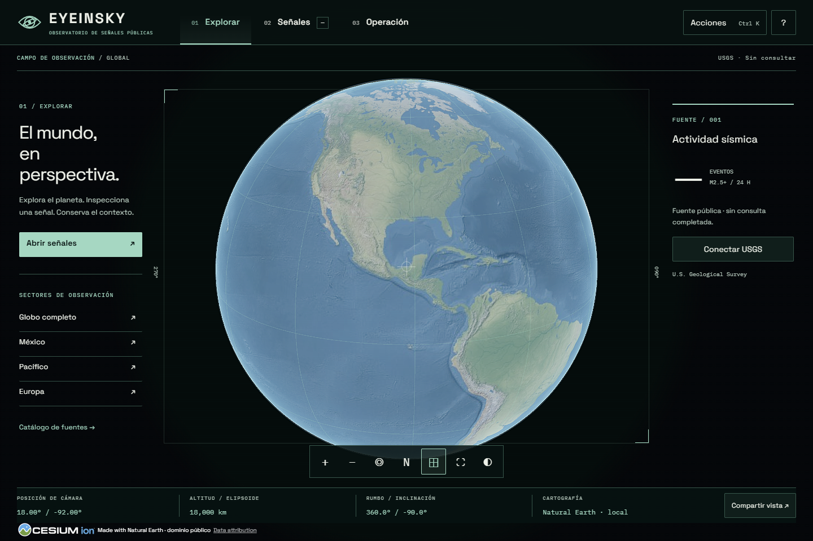

Una consola para explorar el planeta, inspeccionar señales públicas y
conservar contexto. Instrumentación real, lectura precisa y una
identidad de verde mineral sobre negro.

Aplicación real en Chrome, 1440 × 960. Cartografía local Natural Earth.
La captura es evidencia visual del producto, no una imagen que sustituya
el globo.
EYEINSKY / SISTEMACOLOR · TIPO · SÍMBOLO
Iris orbital.
Conservar proporciones y órbita. Reservar al menos un cuarto de la
altura del símbolo como margen de protección. Usar la versión micro en
tamaños pequeños; no reducir el símbolo general a 16 px.
16 / 24 / 32 px
NEGRO #071110
MINERAL #A6D7C2
BLANCO #EEF1E9
ÁMBAR #E6B46D
SECUNDARIO #B2C4B9
SPACE GROTESK
Explorar. Señales. Operación.
Navegación, títulos, lectura y formularios. El espacio y la
jerarquía hacen el trabajo; evitar mayúsculas largas en prosa.
IBM PLEX MONO
23.00° / -102.00° M4.2 · USGS ALT / 18,000 km
Coordenadas, IDs, fechas y magnitudes. Distinguir siempre el momento
del evento del momento de consulta.
ESTADO Y FOCO
Verde mineral para selección. Ámbar para foco y atención. El error,
retraso y vacío se explican con texto. El color nunca es la única señal.
Fondos opacos debajo de rótulos del mapa. Objetivo AA de 4.5:1 para
texto normal; foco visible y controles principales de 44 px. Las
animaciones se reducen con la preferencia del sistema.
EYEINSKY / USOCONTEXTOS Y LÍMITES
De la señal al contexto.
01 / EXPLORAR
Rotar y acercar el globo. Volver a la vista global, orientar al norte y
alternar la cuadrícula geográfica. Las lecturas inferiores corresponden
a la cámara activa. Los filtros térmicos y nocturnos son tratamientos
visuales.
02 / SEÑALES
USGS bajo demanda: eventos M2.5+ del conjunto de las últimas 24 horas.
Filtrar magnitud, antigüedad y sector. Seleccionar una fila abre el
mismo ID en el globo y el expediente. Si la consulta falla, los
registros anteriores permanecen identificados como antiguos.
03 / OPERACIÓN
Guardar cámara, capas, filtros, selección y notas. Reabrir después de
recargar restaura la vista y vuelve a consultar la fuente. El
almacenamiento es local a este navegador y origen: no hay cuentas ni
sincronización.
El enlace público excluye nombre y notas privadas. Las marcas dibujadas
duran la sesión. Las escenas del director son documentos independientes
con sus propias atribuciones.
PROCEDENCIA
Natural Earth: raster local de dominio público, sin imagen en vivo.
USGS: registro público sujeto a revisión. Infraestructura: snapshots
ODbL sin fecha de extracción registrada. Otros proveedores requieren
backend, configuración o autorización de licencia.
Código original: God's Eye View, Bilawal Sidhu, MIT. CesiumJS: Apache
2.0. Conservar los créditos del visor y las licencias en distribución.
Los derechos del código no sustituyen los términos de datos o
medios.
Detalle
técnico y restricciones: source-scope.md. Tokens: tokens.json. Esta
guía acompaña una revisión local; no acredita publicación ni auditoría
independiente.